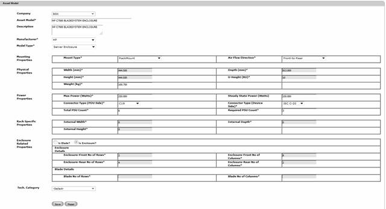
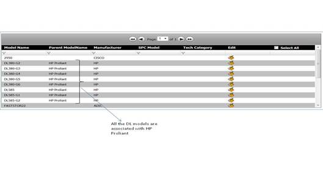
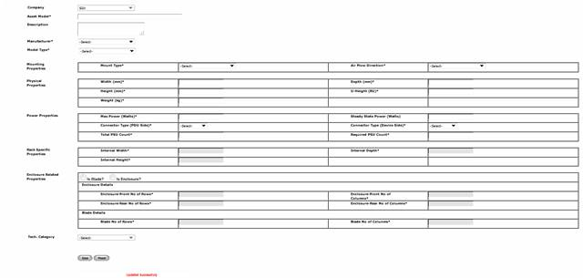

To modify an Asset Model,
9. NavigateMasters>>Asset Model on the DCTrackMobileWeb menu bar.
10. On the Asset Model screen, click the Edit icon corresponding to the Asset Model you want to modify.
You will see the existing values displayed on the screen.

Figure 51: Asset Model Screen – Edit details
11. In the table view, one can see and filter the models based on the parent model, as shown below.

12. Click Save button to update the database with the changes or click Reset button to refresh page fields.
Upon saving, you will see the successful update message.

Figure 52: Asset Model Screen – Successful Update
This function is used to map asset models with a technology category. More information about technology category is provided in next section of the document.
|
Copyright © 2019 Hewlett
Packard Enterprise,v5.2.
|